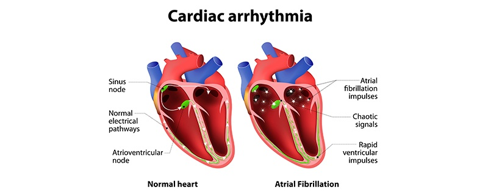

ARRHYTHMIA

SYMPTOMS:
The symptoms you experience may depend on the type of arrhythmia you have — heartbeats that are too fast or too slow. Symptoms of an arrhythmia include:
- lightheadedness
-
fluttering heart or racing heartbeat
-
slow pulse
-
fainting spells
-
dizziness
-
chest pain
CAUSES:
- Diabetes
-
CAD
-
heart defects, including congenital heart defects
-
medications, supplements, and herbal remedies
-
high blood pressure (hypertension)
-
excessive alcohol or caffeine use
-
stress and anxiety
-
existing heart damage or disease